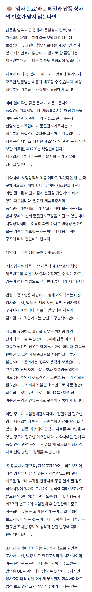
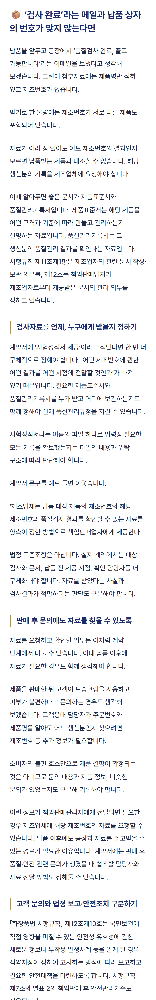
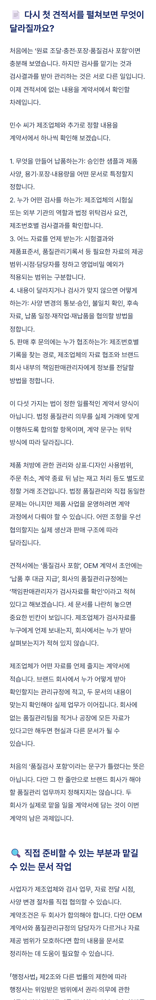
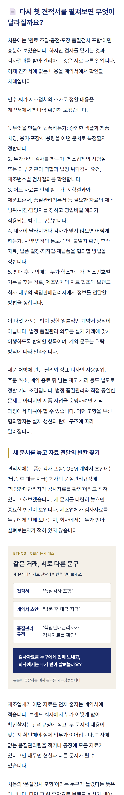

<!doctype html><html lang="ko"><meta charset="utf-8"><meta name="viewport" content="width=device-width,initial-scale=1"><title>OEM 블로그 읽기 흐름 전후 비교</title><style>@font-face{font-family:P;src:url("../../../fonts/Pretendard-Regular.woff2")}@font-face{font-family:P;src:url("../../../fonts/Pretendard-Bold.woff2");font-weight:700}*{box-sizing:border-box}body{margin:0;font-family:P,sans-serif;color:#202a44;background:#f3f0e9}a{color:#1b2b6b}header{padding:22px;max-width:850px;margin:auto}article{max-width:760px;margin:auto;background:white;padding:38px}h1{font-size:29px;line-height:1.5}h2{font-size:25px;line-height:1.5;margin:54px 0 22px;color:#1b2b6b}h3{font-size:20px;line-height:1.6;border-left:3px solid #b8972a;padding-left:14px;margin:36px 0 18px;color:#1b2b6b}p{font-size:18px;line-height:1.95;margin:0 0 25px;overflow-wrap:anywhere;word-break:keep-all}figure{margin:32px 0}figure img{display:block;width:100%;height:auto}figcaption{font-size:13px;color:#566176;line-height:1.6;margin-top:10px}@media(max-width:600px){article{padding:24px}h1{font-size:25px}h2{font-size:23px}h3{font-size:19px}p{font-size:17px;line-height:1.9}}main{max-width:1000px;margin:auto;padding:24px}.pair{display:grid;grid-template-columns:1fr 1fr;gap:24px}.pair img{width:100%;height:auto}nav{display:flex;gap:20px;flex-wrap:wrap;margin:20px 0}figure{margin:0}section{margin-bottom:60px}small{line-height:1.6}@media(max-width:650px){.pair{grid-template-columns:1fr}}</style><header><h1>OEM 블로그: 긴 설명에 읽는 순서 만들기</h1><p>본문 문장은 보존. 소제목 6개·문단 분리 8곳·문서 비교 이미지 1개 추가.</p><nav><a href="before.html">이전 전체 글</a><a href="after.html">개선 전체 글</a><a href="../blog.txt">개선 TXT</a><a href="../review.md">검수 기록</a></nav><small>같은 390px 화면·글꼴·본문 크기. 실제 네이버 에디터가 아닌 로컬 발행 미리보기입니다.</small></header><main><section><h2>긴 설명: 자료 요청과 판매 후 문의 구분</h2><div class="pair"><figure><figcaption>이전</figcaption></figure><figure><figcaption>개선</figcaption></figure></div></section><section><h2>문서 대조: 글로 설명한 관계를 이미지로</h2><div class="pair"><figure><figcaption>이전</figcaption></figure><figure><figcaption>개선</figcaption></figure></div></section><nav><a href="../images/document-comparison.png">문서 비교 이미지 원본</a><a href="after.html">개선 글 전체 읽기</a></nav></main></html>